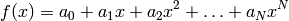

The learning algorithm of neural networks are based, mainly, in the mean squared error of the output, considering the desired output of the network. The same criterium is used for a lot of other types of approximation. The most used, and one of the first, is the linear regression, created by the German sematician Carl Friederich Gauss to track the Ceres asteroid with great success. In this, the relation between two variables is approximated by a straight line. The theory for the linear regression can be easily expanded to approximate functions by polynomials, but in general, the equations are not simple.
If this is the case, a function can be approximated by

It is easy to see that it can be mapped in a neuron, since it is the linear combination of the powers of the variable, plus a linear coefficient. A single biased neuron with N+1 inputs, one output and linear activation can do this job. The advantage of using a neuron, in this case, is that it is easier to deal with the neuron than with the complicated matrix equations that the method generates.
As always, we import numpy for arrays and peach for the library. Also, we import random to generate random numbers:
from numpy import *
import random
import peach as p
We create here the neural network. To make the polynomial regression, instead of supplying the neuron with the value of the independent variable, we supply its integer powers. The number of inputs will be, thus, the order of the polynomial used for approximation. With this approach, our neural network will be very simple: a single neuron with N+1 inputs, one output, and linear activation. The learning algorithm will be the LMS algorithm. Note that the bias parameter is made True. The neural network will handle the bias automatically:
N = 10
nn = p.FeedForward((N, 1), phi=p.Identity, lrule=p.LMS(0.05), bias=True)
We will map a period of a sinus. It is not expected that the coefficients found here will be the same of the Taylor Series, since the optimization criterium is diferent. We make some definitions to help us during the convergence:
error = 1
i = 0
powers = arange(N, dtype=float) # This vector will be used to calculate the powers
The powers vector is a vector of integers from 0 to N-1. We will use it and the numpy constructs to calculate very efficiently the powers of the independent variable. We will iterate the algorithm some times to obtain the coefficients. Notice that we could generate a training set and feed it to the network, without handling ourselves the loop. But with this we can track the error (not shown here, but easy to add):
while i < 2000:
# Here, we generate one value in the interval e calculate the desired
# response. We raise ``x`` to ``powers`` to generate the inputs. It is easy
# to see that the polynomial regression is a linear combination of the
# powers of a variable.
x = random.uniform(-0.5, 0.5)
d = sin(pi*x)
xo = x ** powers
# We feed the network, calculate the error and teach the network
y = nn(xo)
error = abs(d - y)
nn.learn(xo, d)
i = i + 1
We can obtain the coefficients of the regression by inspecting the weights attribute of the first (and only) layer of the network:
print "Coefficients: "
for i in range(N):
print "%d -> %10.7f" % (i, nn[0].weights[0][i])
Coefficients:
0 -> 0.0002545
1 -> 3.0734091
2 -> 0.0481146
3 -> -4.0374620
4 -> -0.1084573
5 -> -1.1921023
6 -> -0.4982046
7 -> -0.8494203
8 -> -0.2357512
9 -> 0.9767743
If we use the matplotlib module, we can plot the resulting mapping and the coefficients, as shown in the figure. Notice that, as should be expected, the coefficients of even powers are approximatelly zero. This happens because the sinus is an odd function: